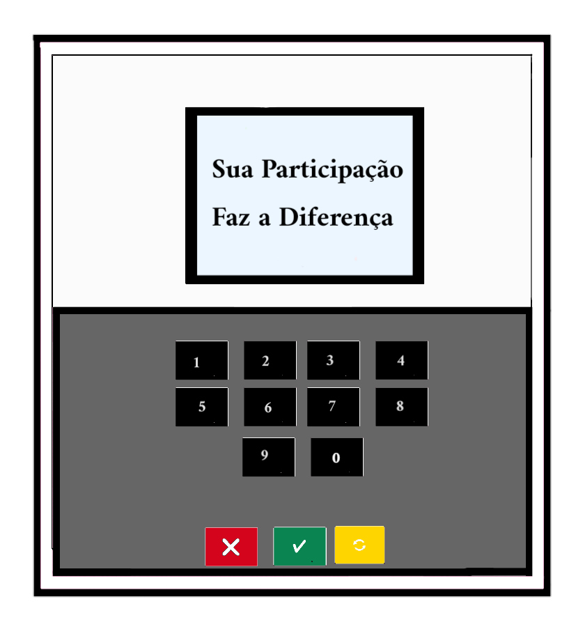
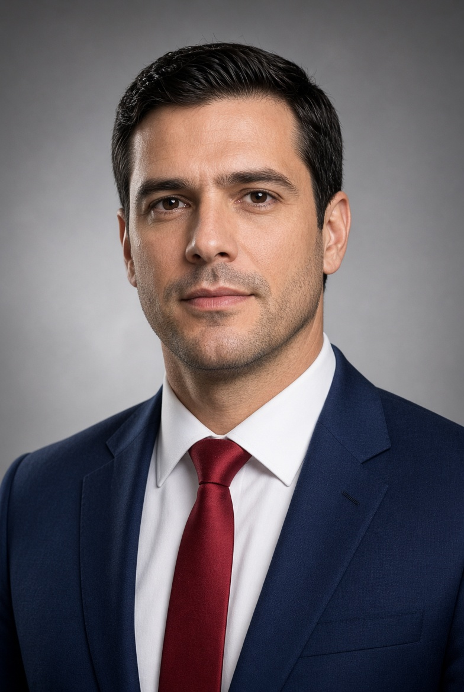
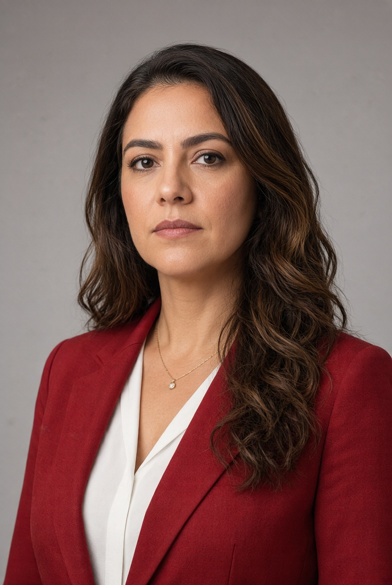
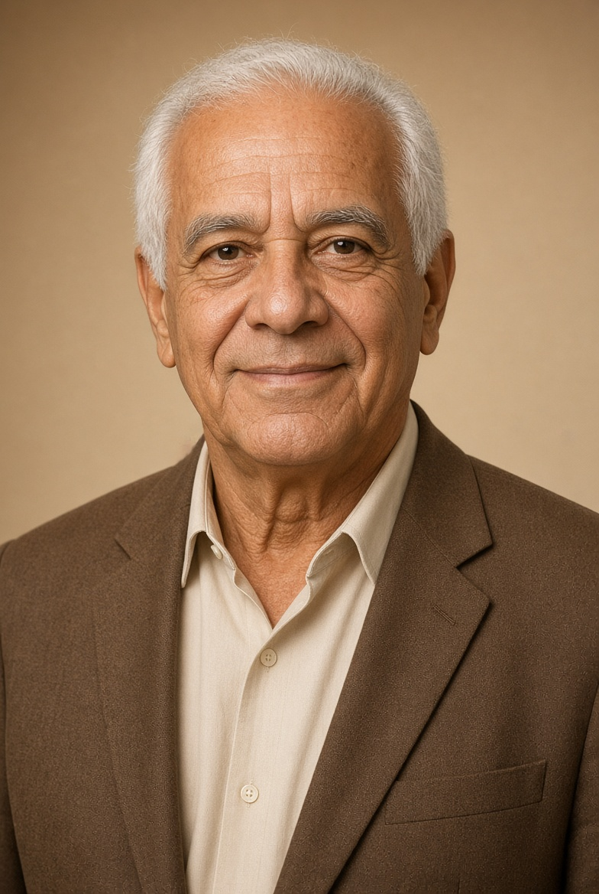
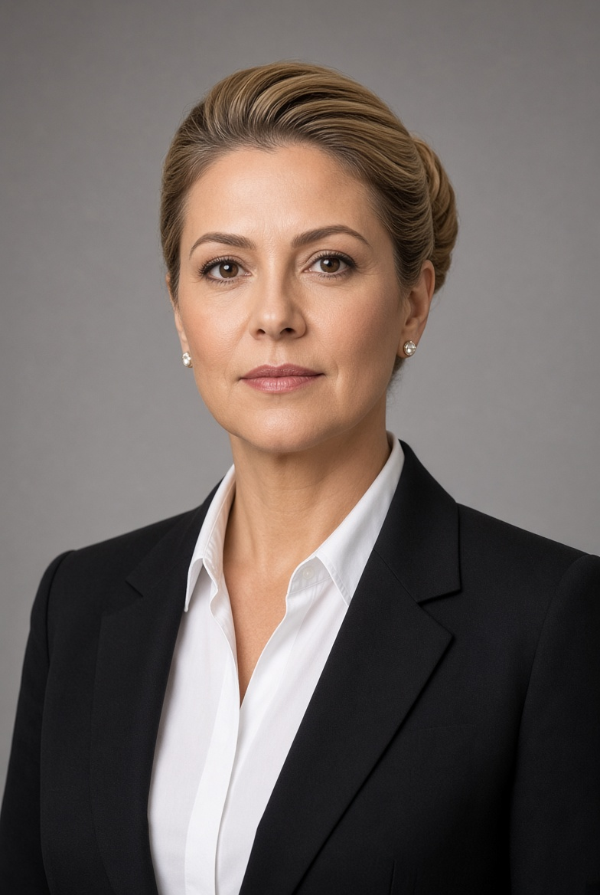

Essa Parte Contém Informações Sobre os Candidatos das Eleições.

Nome Completo: Renan Ferreira Carvalho
Data de Nascimento: 15/03/2000
Idade: 38 anos
Profissão: Jornalista, Influencer Social e Politico
Cidade: Presidente Prudente
Estado: São Paulo
Cargo: Deputado Federal por São Paulo
Restaura Brasil (RB)
Número do Partido: 24
Renan Ferreira Carvalho é um Candidato á Presidência da República pelo Restaura Brasil.
Renan Ferreira se considera liberal-conservador independente do espectro político de centro-direita, Anti-UNC (União Nacional-Conservadora), Anti-PPB (Partido Progresista Brasileiro) e Anti-Objetivo (Partido Objetivo). com foco em políticas de segurança pública e desenvolvimento econômico.
Iniciou sua jornada política em 2029 no Youtube como Jornalista/Influciador Digital, Com o Objetivo de Denúnciar a Corrupção Política no País, Divulgar suas Opiniões duras contra a criminalidade, a Impunidade no País e a censura estatal.

Nome Completo: Ana Beatriz Oliveira
Data de Nascimento: 10/09/2004
Idade: 35 Anos
Profissão: Advogada, Influencer Digital e Politica
Cidade: São Paulo
Estado: São Paulo
Cargo: Deputada Federal por São Paulo
Progresso Nacional (PN)
Número do Partido: 19
Ana Beatriz Oliveira é uma Candidata á Presidência da República pelo Progresso Nacional (PN).
Membra e Fundadora do União Brasil Solidário (UBS), se considera como uma Social-Democrata Independente, Anti-UNC (União Nacional-Conservadora), Anti-PPB (Partido Progressista Brasileiro) e Anti-Objetivo (Partido Objetivo). Focada em políticas de Economia de Bem-Estar Social e de políticas de forte estado.
Começou sua trajetória política em 2028 no Youtube como Influciadora e Fundadora do União Brasil Solidário. O União Brasil Solidário surgiu como uma resistência contra o Ex-Presidente Fábio Fernandes (UNC). Só que após o impeachement contra o Fábio, Não parou por aí. Ela tem o objetivo de ser Presidente da Republica nos Próximos Anos.
Nome Completo: Marcelo Fernandes dos Santos
Data de Nascimento: 12/04/1986
Idade: 52 Anos
Profissão: Empresário, Ativista e Político
Cidade: Ponta Grossa
Estado: Paraná
Cargo atual: Governador do Paraná
União Nacional-Conservadora (UNC)
Número do Partido: 28
Marcelo Fernandes dos Santos é um Candidato á Presidência da República pelo União Nacional-Conservadora (UNC).
Se considera como um conservador de direita, Anti-PPB e Tradicionalista. Focado em políticas de Privatizações e Segurança Pública.
Marcelo Deu inicio á sua história política em 2004 como ativista anti-corrupção e anti-criminalide.
Foi eleito prefeito de ponta grossa em 2012, tendo um desempenho satisfatório com 71% de aprovação geral.
o pontagrossense conseguiu ser eleger governador do paraná em 2018, colocando o paraná como top 3 do país em termos de desenvolvimento econômico e segurança com 74% de aprovação.

Nome Completo: Luiz Carlos "Tonho" de Oliveira
Data de Nascimento: 21/11/1970
Idade: 68 Anos
Profissão: Ex-Sindicalista, Ex-Ferreiro e Político
Cidade: Juazeiro do Norte
Estado: Ceará
Último Cargo: Presidente da Republica (1998-2006) e (2018-2026)
Partido Progressista Brasileiro (PPB)
Número do Partido: 31
Luiz Carlos "Tonho" de Moreira é um Candidato á Presidência da República pelo Partido Progressista Brasileiro (PPB).
Se considera como um progressista de esquerda, reformista e anti-UNC.
Tonho deu inicio á sua história política em 1989 como politico sindicalista, defendendo os direitos dos trabalhadores e promovendo políticas de inclusão social.
O progressista Foi eleito presidente da republica pela primeira vez em 1998, tendo um desempenho satisfatório com 80% de aprovação geral, no ultimo dia do seu segundo mandato teve 68% de aprovação, abaixo do esperado devido a um esquema de corrupção de petróleo.
Em 2018, Tonho foi eleito presidente da republica pela terceira vez, assumindo o cargo em 2018 e em 2022 sendo reeleito pela quarta vez.
Nos mandatos de 2018-2026, teve um desempenho controverso, com críticas à sua gestão e as denúncias de esquema de corrupção.

Nome Completo: Daniella Matarazzo da Costa
Data de Nascimento: 21/07/1993
Idade: 45 Anos
Profissão: Política e Ativista
Cidade: Belo Horizonte
Estado: Minas Gerais
Cargo atual: Senadora Federal por Minas Gerais
Partido: Partido Objetivo (Objetivo)
Número do Partido: 41
Daniella Matarazzo da Costa é uma Candidata á Presidência da República pelo Partido Objetivo (Objetivo).
Se considera social-conservadora de extrema direita, Anti-PPB e Anti-PB.
Começou seu caminho político em 2017 como ativista anti-feminista e defensora dos valores tradicionais.
Foi eleita vereadora de belo horizonte em 2020, criando leis rígidas contra a violência doméstica e segurança pública na capital mineira.
Em 2026, a Mineira foi eleita Deputada Federal de Minas Gerais, Reaplicando suas políticas de segurança e desenvolvimento regional.
Em 2030, Daniella foi eleita Senadora Federal por Minas Gerais.
Aplicou a Medida do Funcionamento da Delegacia da Mulher por 24 horas por dia.